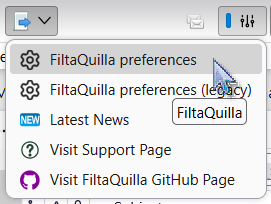
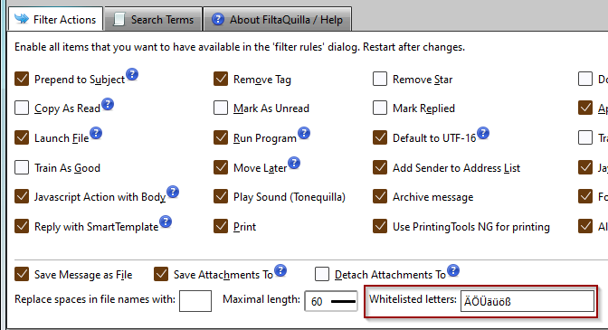
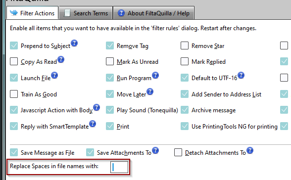
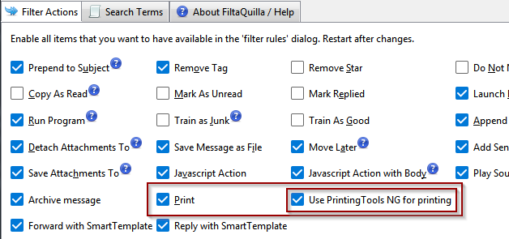
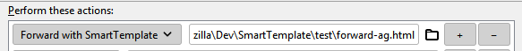
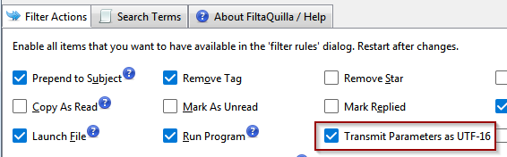
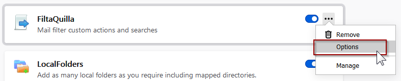

Official Versions
FiltaQuilla is officially distributed on addons.thunderbird.net.
Please go to the github FiltaQuilla Issue Tracker on github for reporting bugs!
Version History
Support FiltaQuilla
05/04/2025
This Add-on was adopted from its previous author and creator R. Kent James who had to retire from Add-on development. It has been largely rewritten for Thunderbird 68 in December 2019, with substantial help from Paweł Tomulik. It had to be rewritten again in November / December 2020 for Thunderbird 78, with more benevolent assistance from Thunderbird employees Standard8 and John Bieling. Many thanks to John for helping with the ongoing work since then as we meet weekly in the Add-on developers meetings.
Changes in Extension architecture have not been standing still since then, a lot of APIs (program functionality) has been implemented for web extensions and "native" mail extensions, which are premissions driven. FiltaQuilla has started to adopt such technologies, but at it's core it is not possible to completely work without the "experimental" part which interacts with the core files of Thunderbird.
this was somewhat alleviated by the annual ESR release cycle which only implemented larger, fundamental changes once a year in various versions (102, 115, 128). But since March 2025 the new default is a monthly release model that can break such functionality - this means I have to constantly test and supervise such changes in the current beta versions. For previewing betas, you can subscribe to issue 262 .
You can support My Work!
As I am often asked about added features
for filter conditions and actions for my Add-on
quickFilters this is a good
location for extending Filter behavior.
If you want to support the FiltaQuilla project, please install quickFilters and
purchase a
quickFilters Pro license.
You can now also donate directly to filtaquilla here.
I am keeping the license for FiltaQuilla as GPL 3.0 for the time being.
-
FiltaQuilla 5.5.1 - 17/10/2025
Improvements (5.5 13/10/2025)
- Made FiltaQuilla compatible with Thunderbird 145.*.
- Added localisations for French, Japanese, Italian and Spanish users.
-
Converted settings dialog to html. [issue 366]
Settings are shown in a responsive tab, which is ideal for all screen sizes. This is a big positive step in modernizing the code base and making it future compatible.
-
Added a toolbar button for convenient access to settings. If it's not needed, you can remove the button via View » Toolbars » Toolbar Layout.

Bug Fixes v5.5.1
- Fixed: Attachments aren't saved anymore in Thunderbird 128 since v5.5. [issue 367], [issue 368].
Bug Fixes
- In some cases, attachments can be saved under wrong name and wrong format. [issue 364]. I added some manual correction to fix the problem. This is a bug in the messages API, that returns an incorrectly encoded file name (it should decode the file name and return it correctly), so I raised Bug 1992976 in this matter.
-
FiltaQuilla 5.4 - 29/09/2025
Latest News
The Thunderbird monthly release cycle will deliver new features and interface updates as they’re developed. Please check whether your current add-ons support this release model. To help with this, you can install the Add-on Compatibility Check.
Some users may have seen a false incompatibility warning after updating from Thunderbird to v142 or higher. This was caused by cached compatibility information in Thunderbird, which sometimes fails to refresh correctly. The previous version of FiltaQuilla was already fully compatible with 143.
To get this fixed I raised a bug with Thunderbird: [Bugzilla 1986027].
Improvements
- Made compatible with Thunderbird 144.*.
- Rewrote the Tonequilla portion (play sound) to use current window as a parameter or the last 3pane window. [issue 258]
-
FiltaQuilla 5.3.1 - 24/07/2025
Improvements
- Made compatible with Thunderbird 141.*.
Bug Fixes
- Thunderbird 141 removed nsIMsgFolder.prettyName
-
FiltaQuilla 5.3 - 25/06/2025
Improvements
- Made compatible with Thunderbird 140.*. Minimum version going forward will now be Thunderbird 128.
- Improvement in asynchronous Save Attachments, leading to slow down of Thunderbird when filtering POP3 mail (no copy listener) [issue 349]. We are now allowed to use nsIThreadManager.processNextEvent() in order to return processing cycles to the system while the attachments are processed.
- Play sound improvements: Fixed open sound file button, extracting the supplied sounds to the default folder profile/extensions/filtaquilla and added a play sound button to filter editor. [issue 350]
Miscellaneus
- Refactored internal action logic for better maintainability and consistency.
- Rewrote saveMessageAsFile to support concurrency and cleaner path handling.
-
FiltaQuilla 5.2 - 13/05/2024
Improvements
- Made compatible with Thunderbird 139.*.
- Make Save Attachments Asynchronous, to future Proof for Thunderbird 128, 140 and release channel [issue 347]. Please restart Thunderbird to force changes to come into effect. It is highly recommended to run filter after junk detection as this will not potentially lock up the user interface when Thunderbird starts up.
- Fixed: save message as file (with custom extension) - does not work anymore [issue 343]
Planned work
- Work in progress: Allow automatic running of filters outside of Inbox (IMAP only) [issue #318]. As adding the checkbox in folder properties didn't meet policy restrictions, we are planning to add a web extension compatible interface for this at a later stage, possible through the folder tree context menu.
- Test attachRegEx_match and see if it needs updates for Tb128 / Release
-
FiltaQuilla 5.1 - 12/04/2025
Bug Fixes
-
Error when using Javascript for a Saved Search (Tb 137)
[issue 338].
The existing xhtml window for editing javascript stopped working in Thunderbird 136,
therefore I rewrote the feature using a standard HTML window and more modern back-end code.
Also, in later versions of Thunderbird 128, the use of eval() triggers a CSP exception and thus stopped to work - this means neither Javascript actions nor Javascript search terms function anymore. I reimplemented the scripting using the more restricted (and safer) evalInSandbox, which only gives a limited, controlled scope to the environment that is accessible from the script.
I regard Thunderbird as a database fat client, with limited tools. Add-ons make the data access much more accessible. The mail store, address books and the Global Database are data the users own. I want to empower my users to access this data in the way they choose, therefore local scripts running in a sandbox environment should be allowed. However we will not suport remote script to be executed as it opens up big security problems.
There may be corporate users of Thunderbird who have a different view on data access, but they can (and usually do) enforce company policies by controlling which apps or Add-ons are allowed to be installed.
- Fixed: Save Attachments To no longer working in Thunderbird 128 [issue 339]. This was a regression caused by modernizing the code which worked well with the current web extension API of the release version Thunderbird 137. I had to add some missing data to the attachments array in order to be able to filter the correct attachments (excluding inline images and other such data).
Planned work
- Allow automatic running of filters outside of Inbox (IMAP only) [issue 318]. As adding a checkbox in Thunderbird's built in folder properties didn't meet policy restrictions, we plan to add a web extension compatible interface for this at a later stage, possible through the folder tree context menu.
-
Error when using Javascript for a Saved Search (Tb 137)
[issue 338].
The existing xhtml window for editing javascript stopped working in Thunderbird 136,
therefore I rewrote the feature using a standard HTML window and more modern back-end code.
-
FiltaQuilla 5.0 - 07/05/2025
Improvements
- Made compatible with Thunderbird 138.*. Minimum version going forward will now be Thunderbird 128.
- The helper function saveAllAttachments() was removed and had to be reimplemented going through web extension layer. The save attachments action is now set to being asynchronous. This might potentially improve overall performance in Thunderbird. [issue 319].
- Detaching Attachments will now also work again, but you have to enter it as the last action of the filter. This is because a new message id is created that makes all subsequent operations fail in the same filter - this behavior is by Thunderbird design.
- Save Messages: Made file operations asynchronous. This should avoid significant slowdowns when Thunderbird starts and tries to execute filters that potentially save many files or attachments. [issue 335].
- Header Regex match: Support using anchor tokens ^ and $ for address lists [issue 329].
- Allow automatic running of filters ouside of Inbox (IMAP only) [issue 318].
- Thunderbird 136 retires ChromeUtils.import - replace with importESModule. Also converted all jsm modules to ESM modules. [issue 331].
Miscellaneus
- Replace deprecated nsILocalFile with nsIFile
-
FiltaQuilla 4.3.1 - 20/11/2024
Improvements
-
Add switches (such as content / html) to the regex body search
[issue 313].
See documentation
here.
A panel helps setting these options and testing the regular expression:

Bug Fixes
- Fixed a recursion error, when streaming the message in order to read the body: [issue 302].
- Fixed: Body RegExp Match -Filter doesn't work [issue 269].
- Fixed: Header Regex Match: BASE64 in From and Subject Fields doesn't match [issue 308].
- 4.3.1: Make sure MailUtils is loaded in Betterbird 115.
- Fixed: Thunderbird 115.* freeze with FiltaQuilla 4.1 [issue 271].
-
Add switches (such as content / html) to the regex body search
[issue 313].
See documentation
here.
-
FiltaQuilla 4.2 - 18/10/2024
Improvements
- Made compatible with Thunderbird 133.
Bug Fixes
- Filter with "Save message as File" action fails to run - [issue 270]
- Body RegExp Match doesn't work. [issue 269]
- "Save Message As File" no longer works as of 4.1 (TB 128.3) [issue 306]
- "Train as Junk" in action list twice #277 [issue 277]
-
FiltaQuilla 4.1 - 16/07/2024
Improvements
- Made FiltaQuilla compatible with Thunderbird 128. [issue 262]
- Some improvements during bodyMimeMatch.
- Added German UI for SmartTemplates.
Bug Fixes
- Fixed file picker which was broken in Thunderbird 125 - [issue 265]
- Fixed an issue during play sound - Init window during tone playing if it is not set.[issue 258]
Miscellaneus / Code Modernisation
- Added debug info for bodyRegEx_match, subjectRegEx_match and headerRegEx_match
- Added troubleshooting info for NetUtil.readInputStreamToString
- Added debug switch "mimeBody" for issues related to reading body of the emnail
-
FiltaQuilla 4.0 - 28/03/2024
Improvements
- Added @FOLDERNAME@ parameter to run program action [issue 234]
- Increased max version to 124.* for beta users
Bug Fixes
- Archiving action is working again.[issue 241]
- Repaired tag by thread (Thunderbird renamed function GetThreadContainingMsgHdr)
- replace deprecated Components.utils.import with ChromeUtils.import. Future work should switch it to an ES module and use ChromeUtils.importESModule.
- Reading files (beta 122): replace deprecated FileUtils.getFile with IOUtils. See [Bug 920187]
Miscellaneus / Code Modernisation
- Replaced deprecated Components.utils.import with ChromeUtils.import
- Use globalThis.Services where it is present
-
FiltaQuilla 4.0b2 - 20/06/2023
First official Beta release for Thunderbird 115. FiltaQuilla had to have some necessary changes for Thunderbird 115, especially custom search terms and actions could not be edited anymore. If you find any new problems, related to the update to ESR115, please report them at FiltaQuilla issue 223.
All new development for Thunderbird 115 will be published in Github as new branch of FiltaQuilla code, starting with a new major version number 4.*.
Improvements
- [issue 223] Make FiltaQuilla compatible with Thunderbird 115.
Bug Fixes
- Fixed ToneQuilla.jsm component (playback of sounds) by adding a background page. tested wav, ogg and mp3 playback.
- Fixed updating version display in top panel of options screen (remove old version Proxy code)
-
FiltaQuilla 3.7.2 - 19/06/2023
FiltaQuilla is now compatible with Thunderbird 112. If you find any new problems, related to the update to ESR102, please report them at the FiltaQuilla issue tracker
All new development for Thunderbird 115 will be published in as new branch of FiltaQuilla code, starting with a new major version number 4.*. See [issue 223] (Make FiltaQuilla compatible with Thunderbird 115).
- [issue 217] Fixed a regression in 3.7 that broke the printing action - FQ now reads Print Delay correctly.
-
FiltaQuilla 3.7.1 - 23/03/2023
Improvements
-
[issue 216] Allow special characters in file name, e.g. German Umlauts. So far most special characters in saved messages and attachments were automatially converted to phonetically similar ASCII characters to avoid file errors. You can now re-add letters that you want to preserve and you know that they work on your file system.
This is achieved via a whitelist, which you can now enter on the actions tab:

Bug Fixes
- [issue 180] Repair Archiving with Thunderbird 102 - using MessageArchiver instead of BatchMessageMover.
- 3.7.1. Fixed a regression in v3.7 that broke the printing action. [issue 217]
-
-
FiltaQuilla 3.6 - 26/10/2022
Maintenance 3.6.1
-
[issue 183] "Save Attachments To" alters attachment filename - this is in sync with naming conventions of the save attachment, in order to avoid invalid characters.
The following characters were added to whitelist:
( ) _ - + ' ! % andspace Also added an optional replacement character for spaces:

Release 3.6 - 17/10/2022
- [issue 165] Support printing the same email multiple times
- Fixed [issue 177] Attachments with illegal filenames are not saved correctly
- Fixed [issue 135] Action of "Detach Attachments To" doesn't detach from message (only saves attachments)
- Fixed [issue 178] Subject or Body (Regular expression) - missing Textbox.
-
-
FiltaQuilla 3.5 - 13/07/2022
- FiltaQuilla is now compatible with Thunderbird 102. FiltaQuilla had to have some necessary changes for Thunderbird 102, especially custom search terms and actions could not be edited anymore. As part of this work, I had to raise the minimum version to 91.0.
- Added help topics for "reply with SmartTemplates" / "forward with SmartTemplates".
- [issue 167] Fixed: Playback of sounds not working in Thunderbird - Replaced sounds with ogg format. For licensing reasons, Thunderbird cannot play back mp3 files natively, please use the provided ogg files instead. You can convert your own sound files to ogg with the Software freac (Free Audio Converter)
- [issue 164] Fixed: Edit fields for search terms / actions not displayed in Thunderbird 102 when dialog loads
- Improved Icon coloring for file pickers in filter editor - these now support dark themes in Thunderbird 102.
-
FiltaQuilla 3.4 - 18/03/2022
- [issue 125] Add ability to archive messages from filters.
-
[issue 152] Support printing via PrintingTools NG by Christopher Leidigh. See also [issue 94] on the PrintingTools github. Use the "Print" action of FiltaQuilla and also enable the option for PrintingTools NG in FiltaQuilla settings:

The action to select in the filter dialog is simply "Print". -
[issue 153] Auto-Forward / Auto-Reply with template - implement triggering template from filter (using FiltaQuilla) this requires the Add-on SmartTemplates Pro version 3.11 or later. SmartTemplates adds a plethora of Composing functionality, such as replacing text or quote headers from the quoted email and also adding / removing recipients and cleaning subject lines.
Planned to work from SmartTemplates 3.11 forward.
The template is an external HTML file that must also set the recipient (list) when forwarding mail. See also SmartTemplates pro feature documentation for detailed instructions.
- [issue 102]
Run Program: New option to transmit parameters as UTF-16 format in order to correctly submit non-latin characters
such as cyrillic: To enable the new option, check the new option "Transmit Parameters as UTF-16"

-
FiltaQuilla 3.3 - 21/01/2022
Bugs Fixed
- [issue 130] Fixed: print automation is not working with Thunderbird Version 91.2.1 - this was due to internal changes in Thunderbird
- [issue 142] Fixed: Add sender to list shows no results in the List / Account dropdown.
- [issue 144], [issue 131] Fixed: Save Message as File doesn't work with illegal filename characters in subject as "\", ":", "*", "|" or "?". these are now replaced with "-". Diacritics and special characters are replaced with phonetical equvialents. Case is now preserved, I assume that most file systems nowadays support this.
Improvements
- [issue 145] Filter value / "text area" is narrow and won't expand #145
-
FiltaQuilla 3.2 - 23/08/2021
If you would like to directly support FiltaQuilla with donation you can now do so here
- [issue 111] Make FiltaQuilla compatible with Thunderbird 91 - WIP. You can download test versions for Thunderbird 91.0 there as well.
- Please check the Issue Tracker for open problems and to add feature requests.
- [issue 115] Added body regexp match. This will search all text and html portions of the multipart messages for the pattern. Note that you may experience slower processing of large amounts of incoming mail due to having to download and stream full messages.
- [issue 75] Added combined Body+Subject Regexp match for convenience (contributed by diabolusss @ github)
- Added option to set regexp for case insensitive match by default
- [issue 53] Support saving files with Mime encoded subjects and file names with cyrillic / other characters.
- Options are now accessible via wrench symbol in Add-ons Manager
- Added Russian locale by ashed @ github
-
FiltaQuilla 3.1 - 09/03/2021
If you would like to directly support FiltaQuilla with donation you can now do so here
- Check the new Issue Tracker for open problems and to add feature requests.
-
Settings have now been moved into the Add-ons screen. Open Add-ons Manager, click "..." on the FiltaQuilla
entry and select "Options":

- [issue 94]
Added ToneQuilla (sound notifications) functionality to FiltaQuilla. Removed some of the larger sounds and added the
following sounds from notificationsounds.com (CC license):
maybe-one-day-584, hold-your-horses-468, scratch-389, your-turn-491, knob-458, worthwhile-438, scissors-423.The default location which the provided sounds are unpacked into is in profile/extensions/filtaquilla. You can either add your own sounds there for convenience or point to sounds in other locations.
- [issue 95] Support instant apply for changes in Options Window.
- [issue 89] Fixed: Options missing in Add-ons Manager. The settings for FiltaQuilla have been moved to the ... menu on the Add-ons Manager and removed from the tools menu going forward.
- Completed strings in Swedish locale
- Fixed a problem with the German translation for "do not notify"
- [issue 97] Printing in background should not enable global setting 'print.always_print_silent' permanently.
-
FiltaQuilla 3.0.3 - 10/12/2020
- New version compatible with Thunderbird 78. Due to its "free as in beer" nature, this took a little longer than expected. The work was laborious and complex, see details below:
- [issue 64] Make FiltaQuilla compatible with Thunderbird 78 ESR. The gruelling detail on all the necessary work can be read there.
- All bindings were replaced with pure JavaScript. This affected editing all conditions that FiltaQuilla adds to the Filter Editor.
- Printing didn't work anymore, that is fixed now.
- [issue 45] Fixed "Move later" / "Copy as Read" For Thunderbird versions > 64
- [issue 76] Fixed detach attachments - if the attachment was already removed then no empty file is generated, but a message is shown in error console showing the "last seen location" where the attachment was originally detached to.
- Fixed behavior of opening FiltaQuilla page jumping to in-page links when a tab with the same basic URL is already shown
- 3.0.1 - version bump because I had to rerelease 2.1.2 fixing a syntax error in manifest.json of 2.1.1.
- 3.0.3 - fixed firstRun code so that support site is loaded on install / update.
-
FiltaQuilla 2.1.2 - 08/12/2020
- Currently working on a version for Thunderbird 78 - you can already get prereleases on my github. The detailed conversion process is discussed at [issue 64]
- 2.1.2 fixed a problem in manifest file (stric_max_verseion) that wouldn't allow it to update existing versions.
- 2.1.1 added strict_max_version to avoid this Add-on being installed in Tb78 - where it would be incompatible
- Fixed issue #34 Action "add sender to Address list" not working.
- Added Icons and fixed look on Address book picker in Filter Editor
- Corrected a string in german locale from "Nicht ändern" to "Nicht benachrichtigen"
- [issue 67] Help links in options dialog were misdirected to the wrong page
-
FiltaQuilla 2.0 - 13/12/2019
- Made Compatible with THunderbird 68. FiltaQuilla had to be largely rewritten for Thunderbird 68, with substantial help from Paweł Tomulik. Going forward most bugfixes / new features will be exclusively available for Thunderbird 68. The reason for this is that through architectural changes on the Mozilla code platform the code for Thunderbird 60 and earlier is substantially different.
- Check the new Issue Tracker for open problems.
- Added links to the quickFilters page for supporting the development team.
-
FiltaQuilla 1.5 - June 28, 2019
- Completed Dutch translation - thanks to Markh van BabelZilla.org
- Completed Swedish translation - thanks to A. Regnander - Phoenix
- Fixed issue #9 Error in Console - Services.prefs.getStringPref is not a function - affecting older versions of Thunderbird.
- Added debug option for future trouble shooting.
- Added support icons for filter actions and search terms: these open dedicated topics on the support pages.
- Added back inheritpane service module.
- Raised minimum version to Thunderbird 52. It is likely that the next version will be minimum 60, once it starts to support Thunderbird 68 to be future proof for 2020.
-
FiltaQuilla 1.4.1 - Nov. 15, 2018
- Fixed a problem with minver. Still compatible with Thunderbird 60.3 / ESR
-
FiltaQuilla 1.4 - Nov. 10, 2018
- Made compatible with Thunderbird 60
- Added localisation (German locale)
- If you want to help with translation into your language, check on: Babelzilla. (you will need a Babelzilla Login for this)
-
FiltaQuilla 1.3.2 - May 24, 2016
- This version fixes broken filter actions MoveLater and CopyAsSend caused by changes in recent versions of Thunderbird
-
FiltaQuilla 1.3.1 - May 22, 2015
- Version 1.3.1 fixes an error that prevented filter actions that train the junk filter.
-
FiltaQuilla 1.3.0 - Oct. 18, 2014
- Fixes issues in printing
- Adds optional file type when saving message
-
FiltaQuilla 1.2.0 - June 6, 2011
Provides compatibility with Thunderbird 5.0
Bug Fixes
- bug 313 Non-ascii characters don’t work in subjectRegEx
- bug 843 Remove lower case from headerRegEx (which prevented certain headers from being properly processed)
New Features
- Search term: Folder Name
- Custom action: Save Message to Folder
- Custom Action: Move Later
-
FiltaQuilla 1.1.0 - April 30, 2010
Bug Fixes
- A core bug that prevented custom searches from working in non-filter contexts was fixed in Thunderbird 3.0.5/3.1 beta 2.
- A core feature was added, beginning with Thunderbird 3.1 beta 2, that allows IMAP filter actions that need the message body to work. This FiltaQuilla version adds support for that term.
- Enabling of filter actions and search terms was divided into separate pages to prevent issues with view overflow.
New Features
- Custom action: javascript and javascript (needs body)
- Custom action: detach attachments from message (requires Thunderbird 3.1 beta 2 or later)
- Custom action: Suffix to subject. Previous action "append to subject", which was misnamed, was renamed to "prepend to subject" though existing defined actions will still work.
-
FiltaQuilla 1.0.1 - Jan. 18, 2010
This revision fixes three bugs:
- Fixed: M164 Filter action “Run” fails with second after-the-fact action
- Fixed: M165 RegEx search term has no method to add flags like case insensitive
- Fixed: M166 Custom search term values are not appearing in customize view